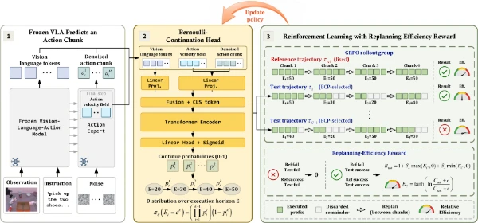
Continue or Replan? Bernoulli-Continuation Policy Learning for Adaptive Horizon Execution
arXiv · 2026
* Equal contribution.
I am currently a Senior Researcher at Microsoft Research Asia (MSRA).
Feel free to contact me if you are interested in my research or potential collaborations.

arXiv · 2026
* Equal contribution.
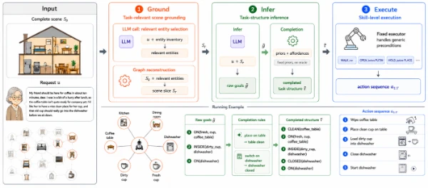
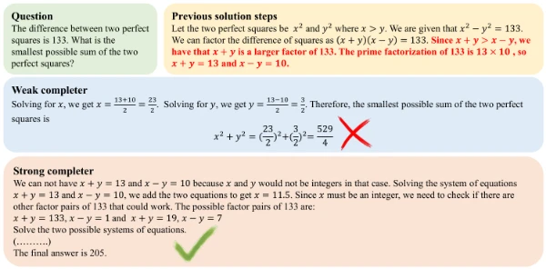
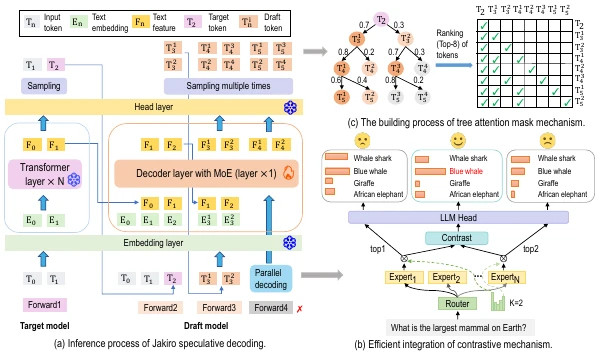
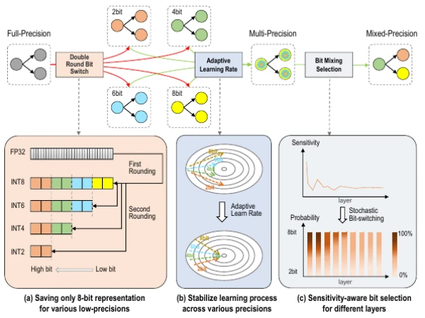
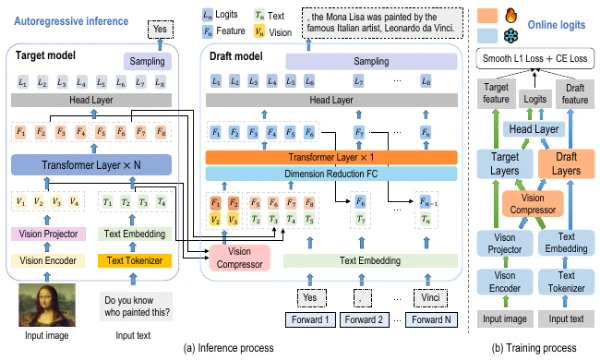
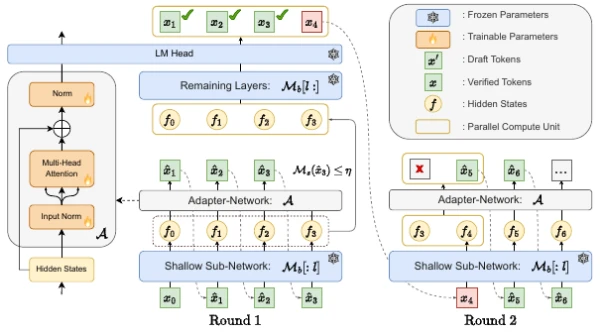
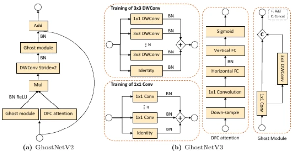
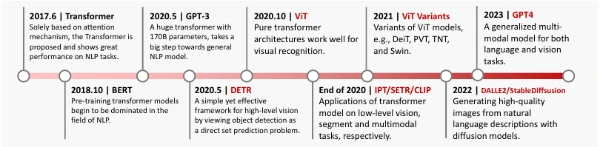
IEEE TPAMI, 45(1): 87–110 · 2023
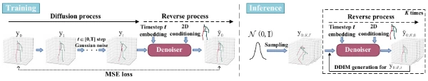
IEEE TMM, 25: 6397–6410 · 2023
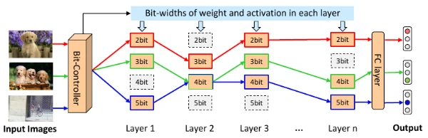
CVPR · 2022 Oral Presentation
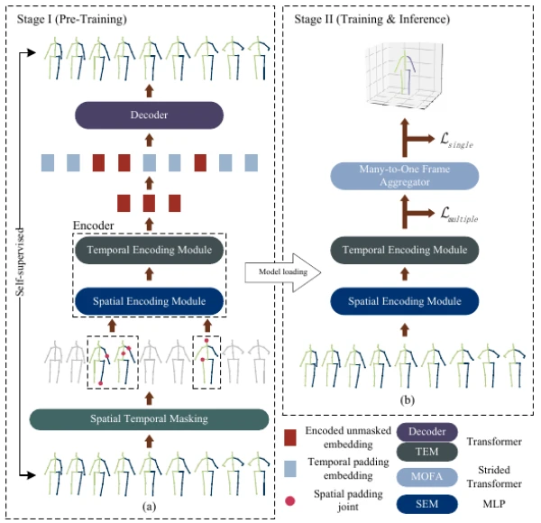
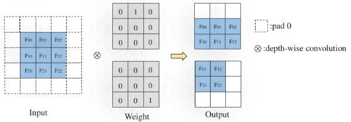
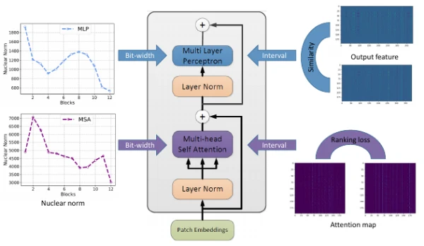
NeurIPS · 2021
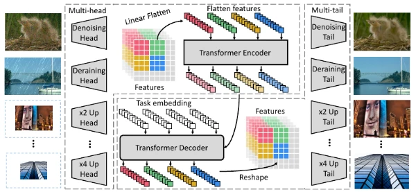
CVPR · 2021
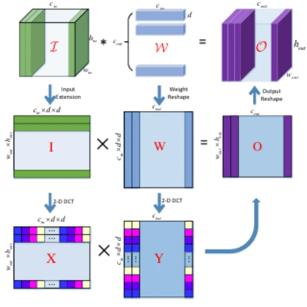